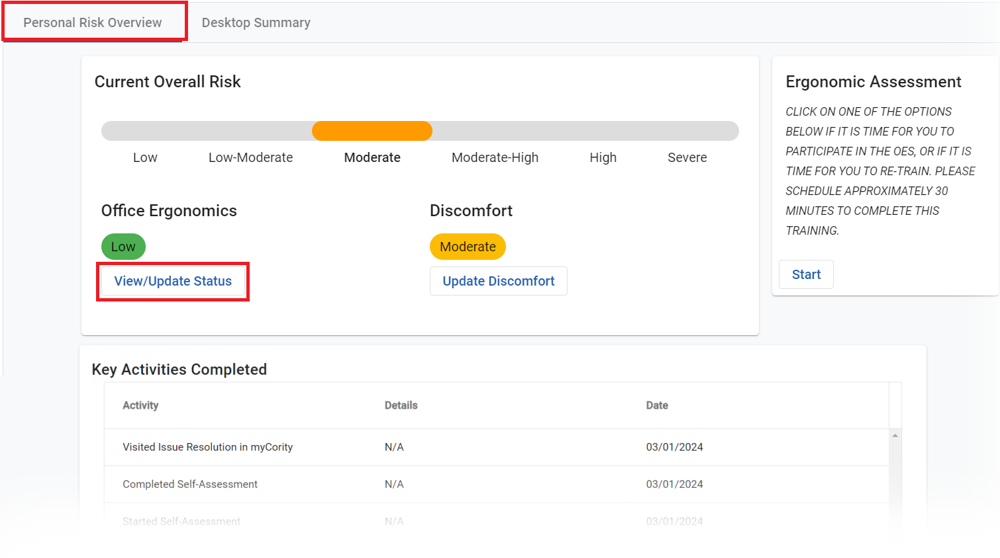
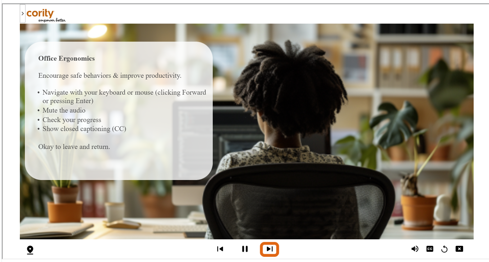

What is the Personal Risk Overview?
The Personal Risk Overview is a page that lets you see and update your current personal risk level, initiate training, and see your past activities.

Clicking the Start button in the "Ergonomic Assessment" section will let you initiate a new training session, or continue a session you have not yet completed:

You'll be guided through a training and assessment (about 20 minutes) in which you will have a blend of training about healthy work patterns at the computer, and opportunities to indicate your current status and make adjustments.
After the training completes, the system will provide a rating of your Office Ergonomics Risk and your risk from any discomfort you indicated experiencing. It will combine these 2 factors with "Desktop Risk" measured by RSIGuard to produce an Overall Risk measurement.
You can reduce this risk by clicking on "View/Update Status" in Office Ergonomics and using the My Tasks tab to work through issues identified in the Assessment. If your Discomfort improves or worsens, you can update this by clicking "Update Discomfort" and the Overall Risk will adjust accordingly. And, every day, RSIGuard updates the system so if can dynamically adjust your Desktop Risk (and thus also Overall Risk).